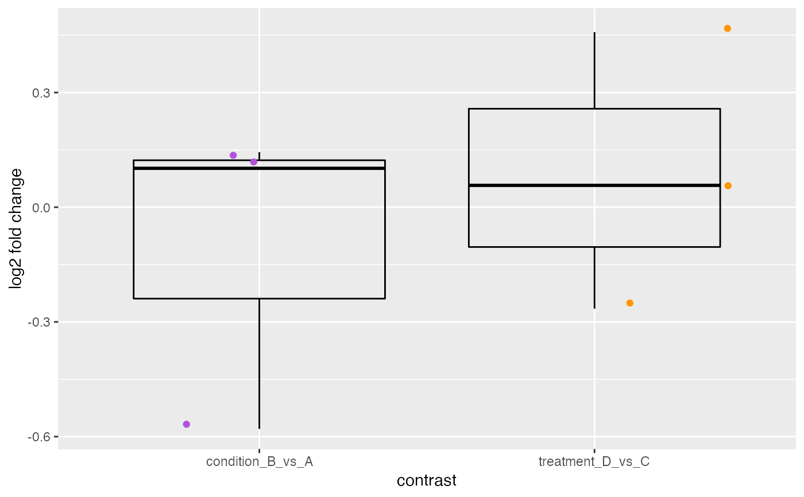

Plot log2 fold change distributions
plotLFC(object, ...)
# S4 method for FGSEAList
plotLFC(
object,
contrast = NULL,
collection,
set,
geom = c("boxplot", "boxplot"),
points = TRUE,
color = getOption(x = "acid.color.discrete", default = getOption(x =
"ggplot2.discrete.colour", default = acidplots::scale_color_synesthesia_d()))
)
Arguments
| object |
Object. |
| ... |
Additional arguments. |
| contrast |
character or NULL.
Contrast name.
If NULL, plot all contrasts.
|
| collection |
character(1).
Gene set collection name.
Typically refers to h (hallmark), c1-c7 collections from MSigDb.
Can obtain using collectionNames() on FGSEAList object.
|
| set |
character(1).
Gene set name, in a defined collection.
For example, "HALLMARK_ADIPOGENESIS".
|
| geom |
character(1).
Plot type. Uses match.arg() internally and defaults to
the first argument in the character vector.
|
| points |
logical(1).
Show individual data points.
|
| color |
ScaleDiscrete.
Desired ggplot2 color scale. Must supply discrete values. When set NULL,
the default ggplot2 color palette will be used. If manual color definitions
are desired, we recommend using ggplot2::scale_color_manual().
To set the discrete color palette globally, use: options(acid.color.discrete = ggplot2::scale_color_viridis_d())
|
Value
ggplot.
Note
Updated 2020-09-23.
Examples
